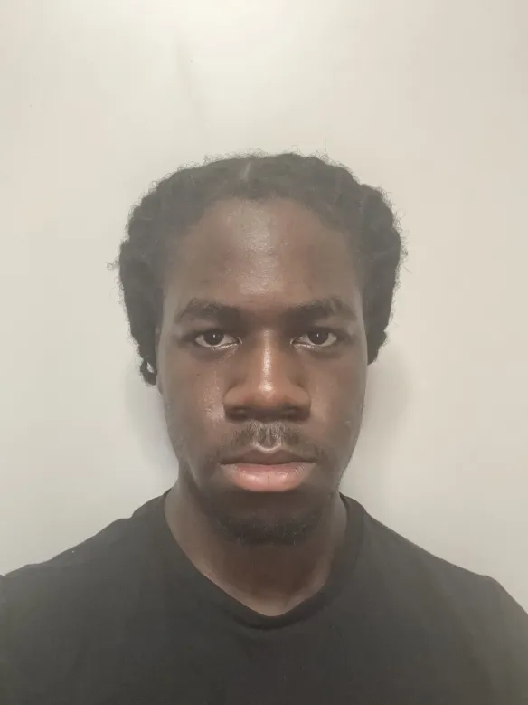

I am currently I first year student going to my second year studying Computer Science with a strong passion for digital technologies and a growing interested into the different sectors within the industry like compute science and software engineer but particularly in understanding how system can be secured against evolving threats. I am naturally curious about how complex systems operate at both levels hardware and software. Through my studies I have been able to develop a solid founding in programming particularly within C++ and python backed with my experience with web development this help me build a solid understanding industry function
I have a big passion for developing interactive applications and exploring the relationship between software and hardware systems. Through my studies and personal projects, I have gained practical experience with working with responsive web applications and developing secure scrips using C++ and Python. These experiences have strengthened grasp of understanding how software behaves in different environments and the importance of writing efficient, secure code to mitigate potential flaws in the programme. My long-term goal is to contribute to an innovative project within the Computer Science sector where I can help design and secure robust systems, I am very eager to apply my skills in a real-world scenario while continuing my study’s do further expand my knowledge and understanding to adapt to challenges and dynamic changes in the technological landscape
